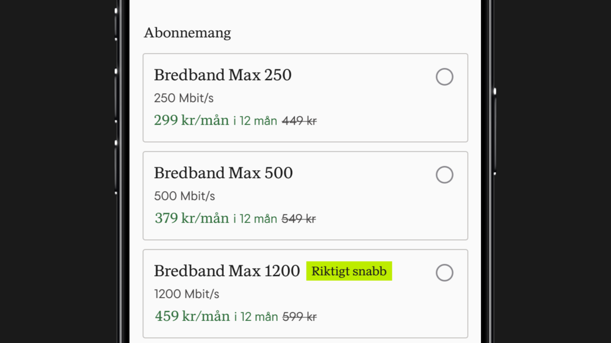
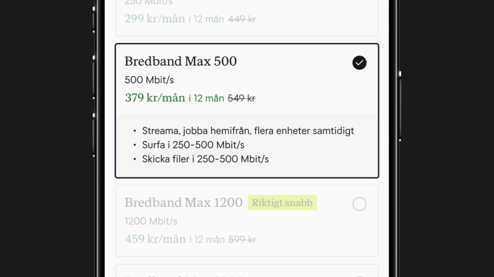
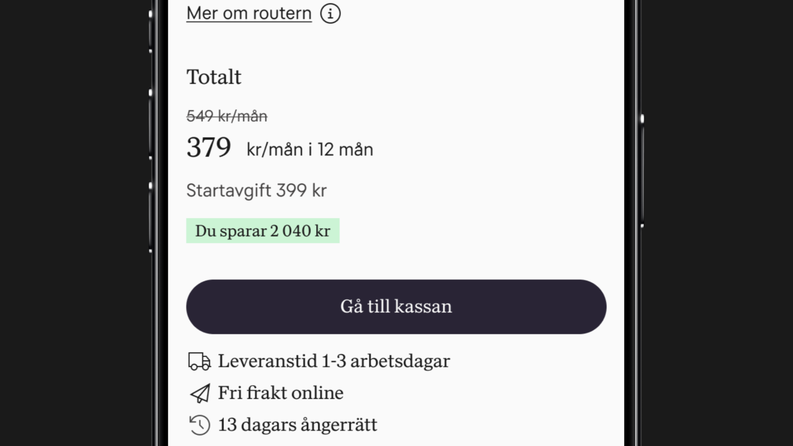
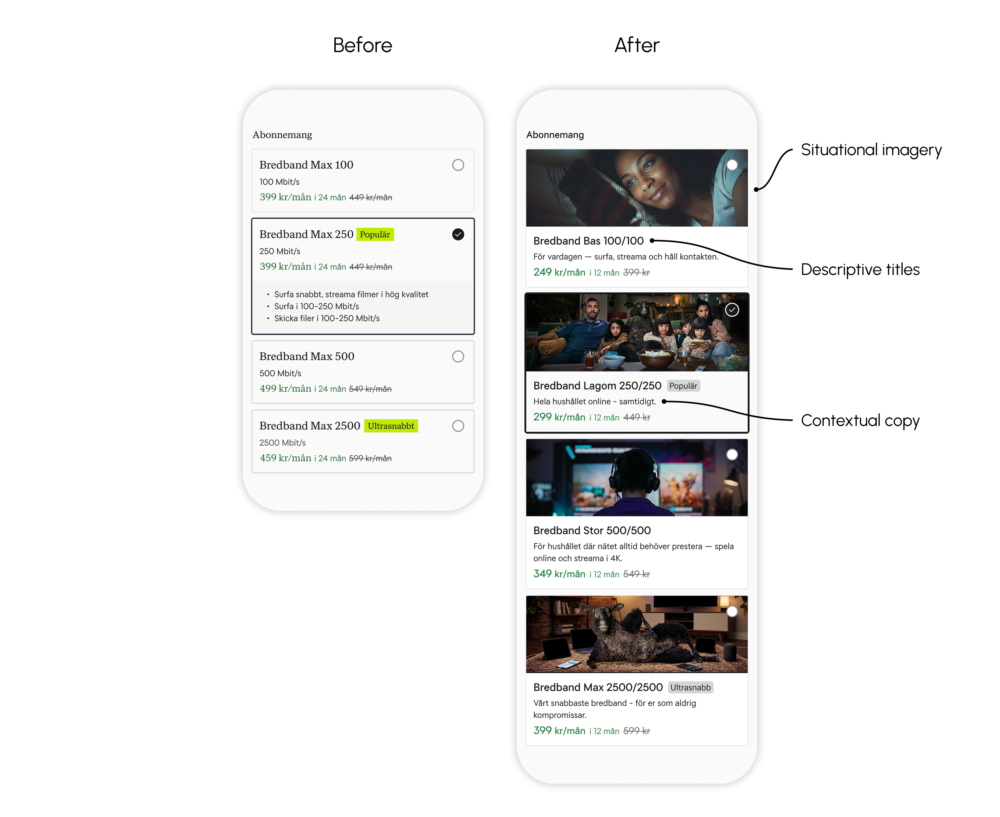
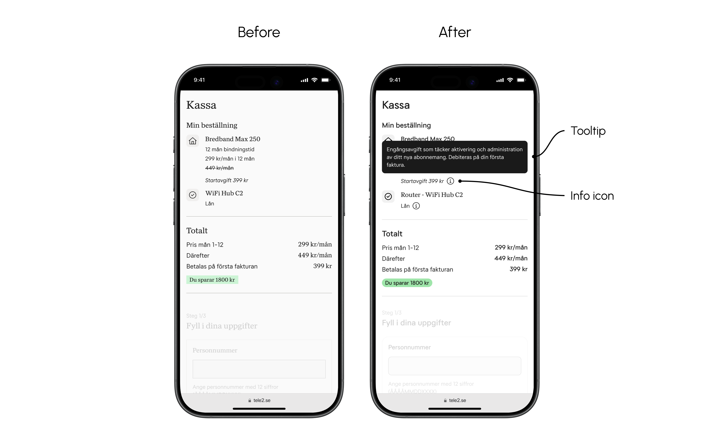
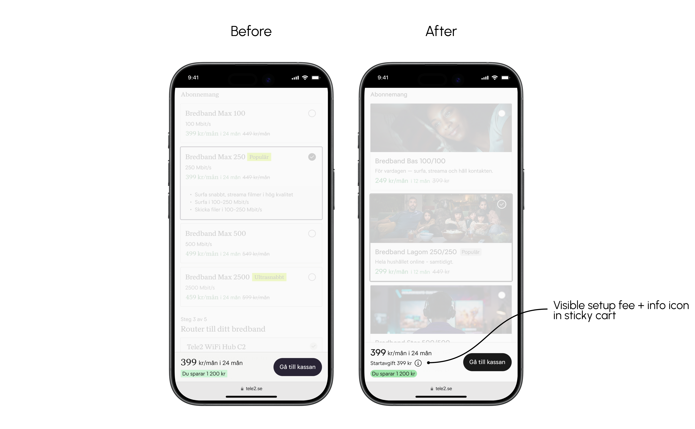
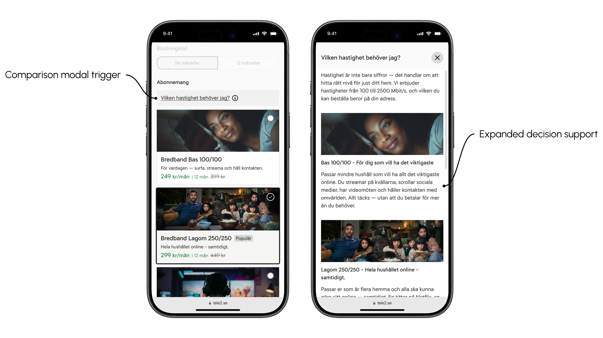

Broadband
Tele2 offers several broadband solutions — each with its own purchase flow depending on the customer's address. I was tasked with auditing and optimizing these flows across desktop and mobile, identifying friction points that caused drop-off and opportunities to improve conversion throughout the funnel.
I conducted 15 moderated observations across both desktop and mobile, combining usability testing with interview questions. I also performed a WCAG audit and a heuristic evaluation based on Nielsen's usability heuristics.
Grounded in research insights, I benchmarked competitors, brainstormed solutions and used AI to explore and challenge ideas. The final design and prototype were built in Figma.
I conducted 5 additional moderated observations using the Figma prototype to validate and iterate on the proposed solutions.
I delivered a report to Tele2 containing design specifications, prioritized recommendations and prototypes — ready for implementation.
The research pointed to a clear pattern: broadband is presented too technically, and the existing decision support is not visible or relatable enough for users to make a confident choice. Unexpected costs and unclear policies further undermined trust at critical moments in the purchase journey.
The majority of participants did not know which broadband speed they needed in their everyday life. They understood that a higher Mbit/s means faster speed, but not what it means for them in practice.

40% of participants missed the USP information hidden behind the expanded card entirely, and those who saw it found it insufficient — leaving users without the context needed to make a confident choice.

Most participants did not notice the setup fee until checkout, and encountering an unexpected cost at that stage left users feeling misled.

The solution focused on making speeds relatable, improving cost transparency and clarifying ambiguous information at the point of decision.
Note: All solutions are presented in white label format due to confidentiality.
Speeds were presented in technical terms — 80% of users couldn't relate Mbit/s to their everyday life. The solution replaced generic product names with descriptive titles that scale clearly with speed, added always-visible contextual copy tied to real usage behaviours, and introduced situational imagery to make each tier instantly recognisable.

60% of users didn't notice the setup fee until reaching checkout, creating a sense of hidden costs and risking abandoned purchases. The solution surfaces the fee in the sticky cart — keeping it visible throughout the flow — and adds an info icon with associated tooltip in both the sticky cart and checkout, explaining what the fee covers and when it's charged.



The existing flow offered no shared overview of plans or expanded information, requiring users to click between cards and keep details in memory. The solution introduced a comparison modal — gathering all plans in one view with expanded decision support.

The validation testing showed that the new copy and imagery improved decision support — all participants used the copy to guide their choice, and 60% found the images helpful in identifying the right plan. However, 20% still needed more information to feel confident, suggesting the copy requires further iteration. This reinforces the case for the comparison modal — which was not included in the test — as a prioritised next step. Image selection also proved sensitive — activity-specific imagery risks excluding users whose behaviour doesn't match the visual.
To properly validate the impact of these solutions, the next step would be to run A/B tests in production — gathering enough data to confirm whether the hypotheses hold. Measuring how interaction with the new solutions impacts drop-off rates across the flow and conversion will turn the hypotheses into quantitative evidence before implementation. Further iteration on copy and imagery will also be needed to ensure the solutions resonate with as broad a range of users as possible.